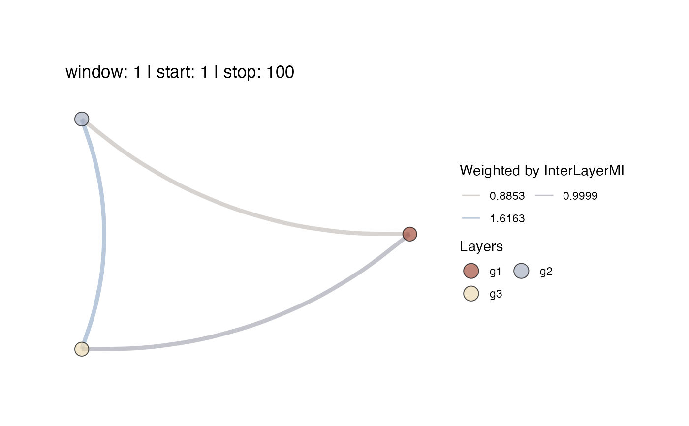

This function will plot a Multiplex Recurrence Network from a list of igraph objects that can be considered the layers of a network. or based on the output of function mrn(). The layers must have the same number of nodes.
mrn_plot(
layers = NA,
MRN = NA,
MRNweightedBy = c("InterLayerMI", "EdgeOverlap")[1],
win = NA,
step = NA,
overlap = NA,
alignment = "r",
cumulative = FALSE,
doPlot = TRUE,
doSave = FALSE,
coords = NA,
RNnodes = FALSE,
vertexSizeBy = "degree",
scaleVertexSize = c(0.01, 5),
vertexColour = NA,
vertexBorderColour = "black",
showVertexLegend = TRUE,
showSizeLegend = FALSE,
alphaV = 0.7,
scaleEdgeSize = 1/5,
alphaE = 0.5,
showEdgeColourLegend = FALSE,
curvature = -0.2,
title = "",
createAnimation = FALSE,
useImageMagick = FALSE,
loopAnimation = TRUE,
transitionLength = 3,
stateLength = 1,
gifWidth = 600,
gifRes = 150,
noParts = TRUE,
imageDir = NA,
silent = TRUE
)A list of igraph objects representing the layers of the multiplex network. The layer networks must all have the same number of vertices.
The output from function mrn()
The measure to be used to evaluate the average structural similarities between the layers of the network. Valid options are: "InterLayerMI" (Mutual information based on similarity of the vertex degree across layers), "EdgeOverlap" (proportion of vertices sharing the same edges across layers). Choosing "InterLayerMI" or "EdgeOverlap" will decide which measure is displayed in the plot of the Multiplex RN, both measures will always be returned in the numerical output.
The window size passed to ts_windower() in which to evaluate "InterLayerMI", "InterLayerCor", "EdgeOvelap", or "JRP". (default = NA).
The stepsize for the sliding window (default = NA).
The window overlap passed to ts_windower() if MRNweightedBy is "InterLayerMI" or "EdgeOvelap". The value of step will be ignored if overlap is not NA. (default = NA).
Whether to right ("r"), center ("c"), or left ("l") align the window.
To make the network represent cumulative time, set directed = TRUE and cumulative = TRUE. This will set the upper triangle of the recurrence matrix to 0 and ensures that the network edges represent recurrent values that have occurred in the past relative to the current observed value (node). If directed = FALSE the argument is ignored (default = TRUE).
Plot the multiplex recurrence network (default = TRUE).
Save the plots.
A data frame with layout coordinates generated by calling any of the igraph layout functions. If NA a circle layout will; be generated (default = NA)
Should the vertices of the MRN represent a plot of the RN of the layers? This is recommended only for a small numbers of vertices. (default = `FALSE``)
A valid igraph function that calculates node based measures, or a numeric constant. (default = "degree")
Scale the size of the vertices by setting a range for ggplot2::scale_size(). This will not affect the numbers on the size legend (default = c(1,6))
A vector of colours for the vertices. If this is a named list, names will be displayed in the legend.
Draw a border around the vertices. Pass NULL to use the same colour as the fill colour (default = "black")
Show the vertex colour legend?
Should a legend be shown for the size of the nodes? (default = FALSE)
Set transparency for Vertices (default = 1)
Scale the size of the edges by a constant: E(g)$width * scaleEdgeSize (default = 1/5)
Set transparency for Edges. A single numeric, or a vector of length ecount(g) (default = 0.8)
Should a legend be shown for the colour of the edges? (default = FALSE)
The curvature parameter for edges see geom_curve() (default = -0.7)
A title for the plot
If createAnimation = TRUE and doPlot = TRUE and a windowed analysis is conducted, an animation will be produced using either package gganimate (if useImageMagick = FALSE) or animation (if useImageMagick = TRUE). The main difference is that gganimate has nice animation transition features, but plots the MRN using ggplot2, which does not have great options for displaying the nodes as images. With package animation a sequence of igraph plots will be converted to an animation. If doSave = TRUE the animation will be saved in imageDir as an animated gif by calling either gganimate::anim_save(), or animation::saveGIF() (default = FALSE)
Should ImageMagick be used to create the animation. NOTE: ImageMagick has to be installed on your system, see animation::saveGIF() (default = FALSE)
Should the animation loop? (default = TRUE)`
Length of each transition in the animation, ignored if useImageMagick = TRUE (default = 3)
Value of state_length if gganimate is used, or the interval in seconds for animation::ani.pause() (default = 1)
Width of the animated gif in pixels. The default width will be 600/150 = 4 in or 10.16 cm (default = 600)
Resolution of the animated gif in ppi (default =150)
Do not plot the individual graphs that make up the animation to the current dev (default = TRUE)
Directory to save the layer images and windowed MRN plots. If NA, the value returned by getwd() will be used, if NULL no windowed images will be saved (default = NA)
Silent-ish mode
A matrix with edge weights between layers that represent the measure MRNweightedBy.
#' # Create some layers
library(igraph)
layers <- list(g1 = igraph::sample_smallworld(1, 100, 5, 0.05),
g2 = igraph::sample_smallworld(1, 100, 5, 0.5),
g3 = igraph::sample_smallworld(1, 100, 5, 1))
mrn_plot(layers = layers,showEdgeColourLegend=TRUE)
#> $MRN
#> $MRN$`window: 1 | start: 1 | stop: 100`

#>
#>
#> $interlayerMI
#> $interlayerMI$`window: 1 | start: 1 | stop: 100`
#> g1 g2 g3
#> g1 NA 1.079077 1.189474
#> g2 NA NA 1.787759
#> g3 NA NA NA
#>
#>
#> $edgeOverlap
#> NULL
#>
#> $meanValues
#> NULL
#>